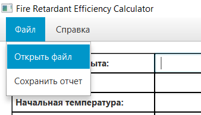
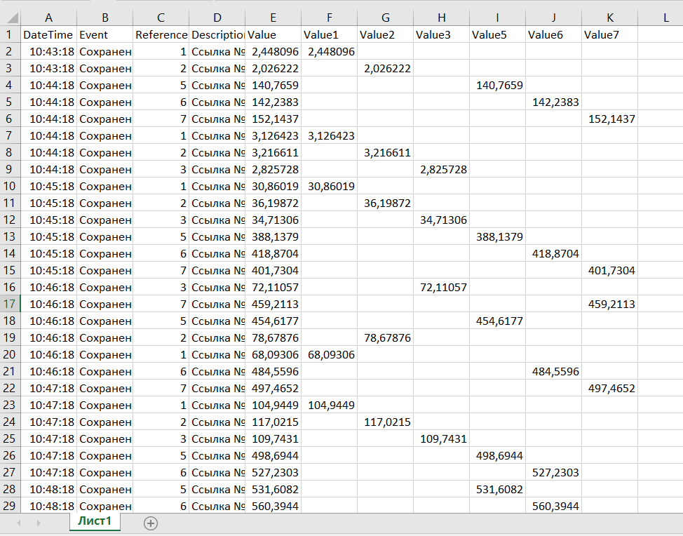
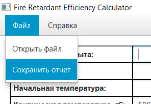
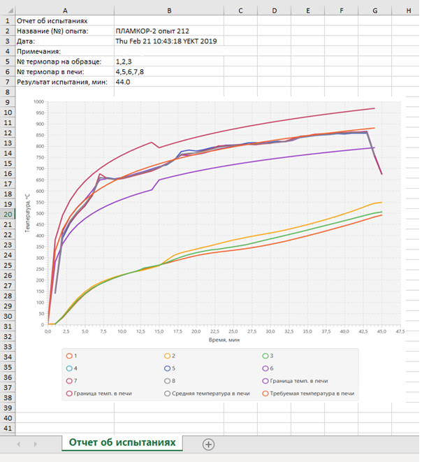

Назначение программы
Разрабатываемая программа предназначена для формирования отчета по результатам испытаний,
проведенных в соответствии с ГОСТ Р 53295 «Средства огнезащиты для стальных конструкций.
Общие требования. Метод определения огнезащитной эффективности».
Описание графического интерфейса пользователя
Графический интерфейс программы представляет собой окно, визуально разделенное на 2 части.
В верхней части окна расположено меню, содержащее пункты «Файл» и «Справка».
Меню «Файл» содержит пункты «Открыть файл» и «Сохранить отчет».
Меню «Справка» содержит пункт «Показать справку».
В правом верхнем углу расположены стандартные системные кнопки, с помощью которых можно закрыть программу,
свернуть окно программы, свернуть программу в окно.
В верхней левой части расположена таблица с данными об опыте,
в текстовые поля которой пользователь может ввести свои данные.
Часть текстовых полей заполняется программой по умолчанию:
- поле «Название (№) опыта» заполняется автоматически по названию входного файла;
- поле «Дата» считывается из файла входных данных как первое значение даты, приведенное в файле входных данных;
- поле «Начальная температура» заполняется, если пользователь не ввел свое значение –
значение рассчитывается как средняя температура на всех термопарах в начальный момент времени (0 минут с начала испытания).
При вводе в это поле значение следует писать как целое число либо число с дробной частью через точку в формате «x.x»;
- в поле «Критическая температура, ℃» по умолчанию введено значение «500», т.к.
это значение критической температуры в стандарте на проведение испытаний;
- поле «Примечания» не имеет заполнения по умолчанию, оно предназначено для дополнительной информации, которую необходимо включить в отчет;
- поле «№ термопар на образце» по умолчанию имеет значение «1,2,3» т.е. за термопары на образце принимаются каналы № 1, 2 и 3.
Номер термопар следует вводить через запятую, номер должен находиться в диапазоне от 1 до 8. По данным с этих каналов рассчитывается результат испытания;
- поле «№ термопар в печи» по умолчанию имеет значение «4,5,6,7,8» т.е. за термопары в печи принимаются каналы № 4, 5. 6, 7, 8.
Номер термопар следует вводить через запятую, номер должен находиться в диапазоне от 1 до 8.
По данным с этих каналов рассчитываются допустимые отклонения и строятся график средней температуры в печи и допустимых отклонений;
- поле «Результат испытания, мин» заполняется программой автоматически после расчета результата испытаний (при нажатии на кнопку «Рассчитать результат»).
Под таблицей с данными об опыте расположены кнопки «Перестроить график» и «Рассчитать результат».
Если поля, введенные по умолчанию (начальная температура, номера термопар) некорректны,
следует ввести корректные значения и нажать кнопку «Перестроить график».
График будет перестроен с использованием новых значений.
При нажатии на кнопку «Рассчитать результат» на основании полученных данных будет рассчитан результат испытания,
как момент времени в минутах, в который среднее значение температуры на термопарах на образце достигло 500 ℃ или более.
Будет заполнено поле «Результат испытания, мин» и проведена вертикальная линия на графике от соответствующего результату значения шкалы времени.
Если файл входных данных не был загружен, нажатие на кнопки «Перестроить график» и «Рассчитать результат» не вызовет никаких действий программы.
В нижней левой части расположена таблица с данными о температурах.
Таблица содержит следующие столбцы: «№» (номер строки в таблице), «Канал» (номер канала),
«Время, мин» (время в минутах, прошедшее с начала испытания), «Температура, ℃» (температура, измеренная на данном канале в данный момент времени).
Таблица заполняется автоматически значениями из файла входных данных.
Для сортировки по значению конкретного поля необходимо нажать на заголовок столбца.
Таблица имеет полосу прокрутки справа.
В левой части окна расположен график температур.
График строится автоматически при загрузке файла и может быть перестроен по данным,
введенным пользователем после нажатия кнопки «Перестроить график».
Отметка с результатом появляется на графике после нажатия кнопки «Рассчитать результат».
В верхней части расположено название графика, которое может быть изменено пользователем.
График имеет две оси: вертикальную ось «Температура, ℃» и горизонтальную ось «Время, мин».
Оси промаркированы автоматически, размер осей зависит от диапазона входных данных и определяется автоматически.
В нижней части графика расположена легенда, на которой указано соответствие цветов линий графика номерам каналов
/ ограничивающим линиям / средней температуре в печи / результату испытания.
Открытие файла
Для открытия файла необходимо выбрать пункт «Открыть файл» в меню «Файл».

Откроется окно выбора файла, в котором необходимо выбрать файл с расширением с расширением «xlsx»,
содержащий данные о проведенном опыте.
При открытии файла, не соответствующего по структуре требованиям к файлу входных данных,
не будет произведено никаких действий.
При открытии подходящего файла из него будут загружены данные, будет построен график.
Требования к файлу входных данных:
- Информация об опыте расположена на первом листе книги Excel;
- Заголовки столбцов расположены в первой строке файла;
- Столбец с датой и временем измерения имеет заголовок «DateTime»;
- Столбцы с температурой на каналах (термопарах) имеют заголовки «Value1», «Value2» … «Value8»;
- Также в файле могут присутствовать другие столбцы, не используемые при работе разрабатываемой программы.
Пример файла входных данных:

Сохранение отчета
Для сохранения файла отчета необходимо выбрать пункт «Сохранить отчет» в меню «Файл».

Откроется окно сохранения файла, в котором необходимо выбрать директорию для сохранения и ввести название файла отчета.
Отчет будет сохранен как файл с расширением «xlsx».
В отчет входят поля «Отчет об испытаниях», «Название (№) опыта», «Дата», «Примечания»,
«№ термопар на образце», «№ термопар в печи», а также построенный график (с названием).
Пример файла отчета:
